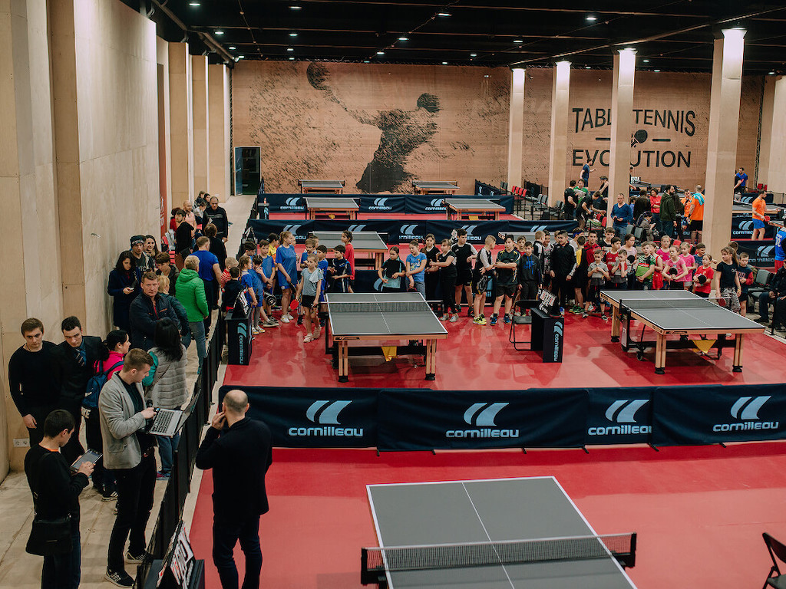

Настільний теніс
Настільний теніс (пінг-понг) — олімпійський вид спорту, у якому використовують спеціальні ракетки та ігровий стіл, розмежований сіткою навпіл. Гра може проходити між двома суперниками або двома парами суперників. Завданням гравців є утримувати м'яч в грі за допомогою ракеток — кожен гравець після одного відскоку м'яча на своїй половині столу повинен відправити м'яч на половину столу суперника. Очко нараховується гравцеві, коли суперник не може повернути м'яч відповідно до правил. За сучасними міжнародними правилами, кожна партія триває до 11 очок. Матч складається з непарної кількості партій, і грається на більшість перемог у партіях.
Зміст статті
Опис
Гра відбувається на спеціальному столі розміром 2,74 метри (9 футів) на 1,525 метра (5 футів). Висота столу — 76 см (30 дюймів). Стіл звичайно зроблений з ДСП або подібного матеріалу і пофарбований у зелений, темно-синій або чорний колір. Стіл ділиться навпіл сіткою заввишки 15,2 см (6 дюймів). Гра ведеться ракетками, що зроблені з дерева, покритого одним чи двома шарами спеціальної гуми з кожного боку. М'яч для настільного тенісу зроблений з целулоїда. Розмір м'яча — 40 мм у діаметрі, вага — 2,7 г. М'яч повинен бути пофарбований у жовтогарячий або білий колір.
Гра проходить між двома гравцями, або між двома командами з двох гравців.
Кожен розіграш м'яча закінчується присвоєнням одного очка тому чи іншому гравцю (команді). За сучасними міжнародними правилами, встановленими у 2001 році, кожна гра триває до 11 очок, хоча гра до 21 очка все ще популярна на непрофесійному рівні. Матч складається з непарної кількості ігор (звичайно п'яти або семи).
Історія
Більшість фахівців вважає, що настільний теніс з'явився в Англії, як різновид великого тенісу. Можливо, що настільний теніс виник у США, Індії або Південній Африці (передбачається, що в останніх двох країнах у настільний теніс почали грати відряджені туди британські офіцери). Незабаром гра з відкритого повітря перейшла в приміщення — грали на підлозі. Пізніше з'явилася гра на столах. Простий інвентар, а головне невеликі розміри майданчика дозволяли грати де завгодно. Тоді не було визначених правил. М'ячі робилися з ниток, книги, розставлені на столі, були сіткою, а шматки товстого картону були ракетками. Досить довго гра використовувалася не як вид спорту, а тільки як засіб для проведення вільного часу й активного відпочинку.
Правила гри
Гра полягає в перекиданні м'яча ударами ракетки через сітку, натягнуту впоперек столу. Грати можуть двоє або четверо.
Мінімальні розміри приміщення для 1 столу — 7,7 на 4,5 м.
Для гри необхідно мати: стіл, сітку, ракетки, м'яч. Гра починається з подачі м'яча одним із гравців (по долі). Після удару ракеткою по м'ячу він повинен відскочити від столу на стороні того, хто подає, перелетіти через сітку, не зачепивши її, і торкнутися столу на іншій стороні. Під час подачі гравець, а також його ракетка й м'яч повинні знаходитись за задньою лінією столу.
Подача вважається неправильною, якщо м'яч подано над столом або з ходу (з 1 вересня 2002 р. — подача регламентується новими правилами). Якщо м'яч під час подачі відскочив від столу на стороні того, хто подає, перелетів через сітку, зачепивши її або стійки сітки, і торкнувся столу на іншій стороні, то проводять повторну подачу, а очко не зараховують. Кількість повторних подач не обмежена.
Гравець, що приймає, повинен відбити м'яч, що відскочив на його стороні, назад на сторону гравця, який подав; той, у свою чергу, відправляє його на сторону того, хто приймає, і так продовжується доти, доки хто-небудь із гравців не припуститься помилки. Кожна помилка дає супротивнику 1 очко.
Гравець виграє очко, якщо супротивник:
- неправильно подасть м'яч;
- відіб'є м'яч з льоту до його дотику до столу;
- відіб'є м'яч за межі столу;
- не зможе прийняти правильно надісланий м'яч;
- відбиваючи м'яч, чіпатиме його ракеткою більше одного разу або піймає м'яч на ракетку, а потім кине його;
- торкнеться м'яча під час розіграшу будь-якою частиною тіла, що знаходиться над столом, або зачепить сітку, стійку столу.
Після кожних 2 очок (до 1 вересня 2001 р. — кожні 5 очок) подача переходить до гравця, що приймає.
Партія вважається виграною після того, як один з гравців набере 11 очок (до 1 вересня 2001 р. — набере 21 очко) за переваги не менше ніж у 2 очки. За рахунку 10:10 (до 1 вересня 2001 р. — за рахунку 20:20) подачі чергуються після кожного очка. Після кожної партії гравці міняються сторонами і черговістю подач. Гра складається з 5 або 7 партій (до 1 вересня 2001 р. — кількість партій становила 3 або 5)
Інвентарь
Стіл
Тенісний стіл – спеціальний стіл, розділений сіткою на дві половини. Має розміри, які є міжнародним стандартом: довжина 274 см, ширина 152,5 см, висота 76 см.
Ігрова поверхня включає в себе верхні кромки (куті) столу, вертикальні сторони цих крайок ігровою поверхнею не рахуються.
Ігрова поверхня може бути з будь-якого матеріалу і повинна забезпечити однаковий відскік близько 23 см під час падіння на неї стандартного м'яча з висоти 30 см. Поверхня столу розділяється на дві половини вертикально - сіткою. Ігрова поверхня столу має бути матовою, однорідною темного окрасу. Вздовж кожної кромки столу має йти розмітка - біла лінія шириною 20 мм. При використанні столу для парної гри посередині столу наноситься біла лінія шириною 3 мм, перпендикулярна до сітці.
Сітка
Комплект сітки складається з самої сітки, підвісного шнура та опорних стійок разом з їх кріпленням до поверхні столу.Сітку за допомогою шнура і стійок встановлюють так, щоб її верхній край знаходився на висоті 15,25 см від поверхні. За бічні лінії столу сітка не повинна виступати більш ніж на 15,25 см.
М'яч
М'яч для настільного тенісу виготовляється із целулоїду або подібної пластмаси. Діаметр м'яча 4 см, маса 2,7 г. М'яч може бути білого або оранжевого кольору, обов'язково матовий. Починаючи з 2007 року м'ячі іншого кольору на міжнародних змаганнях не використовують. До 2003 року застосовувалися м'ячі діаметром 38 мм; причина збільшення розміру – занадто велика швидкість м'яча, що викликала незручності для суддівства і не сприяла чіткому баченню гри.
Ракетка
У грі використовуються ракетки, зроблені з дерева (підстава), покритого однією або двома кулями спеціальної гуми (накладки) з обох сторін (при використанні ігрової хватки «перо» іноді одна із сторін ракетки накладки не має, в цьому випадку під час гри ця сторона використовуватися не винна). Накладки на різних сторонах ракетки можуть бути різними і повинні відрізнятися кольором.
Нарахування очок
Очки нараховуються гравці у наступних випадках:
- суперник не виконав правильну подачу;
- суперник не виконав правильне повернення;
- після правильно виконаної подачі або повернення м'яча, до удару суперника, торкнутися чогось, крім комплекту сітки;
- м'яч пролетити над ігровою поверхнею боку столу даного гравця або за кінцеву лінію ігрової поверхні боку столу даного гравця, не коснувшись її, після того, як суперник ударив по м'ячу;
- суперник заважає м'ячу;
- суперник навмисне торкається м'яча двічі поспіль (кисть руки, що тримає ракетку, вважається частиною ракетки, відбити м'яч цією кистью або її пальцями не вважається помилкою, крім того, якщо м'яч потрапити в кисть або в її пальці, а потім у ракетку, то це також не вважається помилкою);
- суперник б'є по м'ячу стороною ракетки, яка не призначена для гри (див. розділ «Ракетка»);
- суперник або те, що на ньому надіто, зрушити ігрову поверхню, поки м'яч у грі;
- суперник або те, що на ньому надіто, торкнеться комплекту сітки, поки м'яч у грі;
- суперник торкнеться вільною рукою ігрової поверхні;
- у парній зустрічі, хтось із його суперників б'є по м'ячу не в порядку, встановленому правилами;